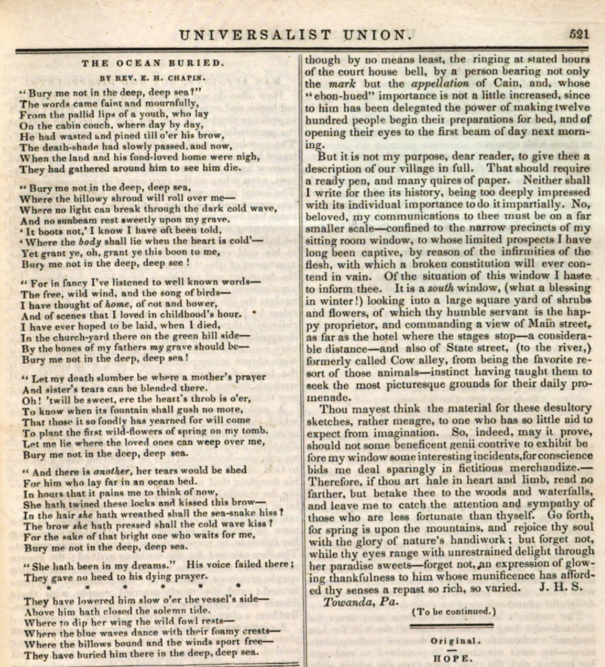
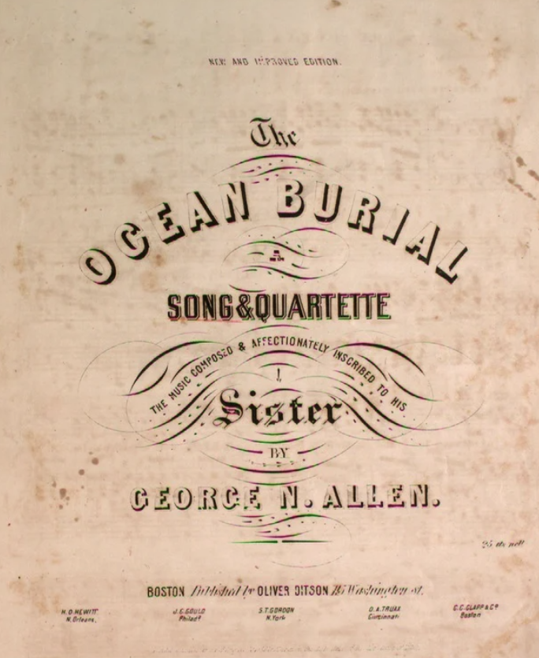
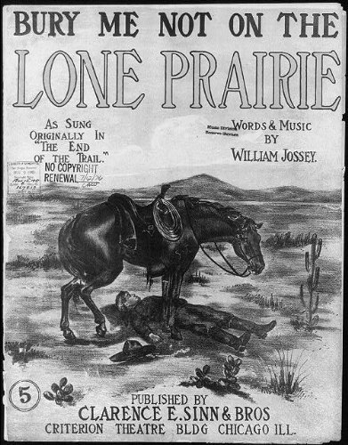
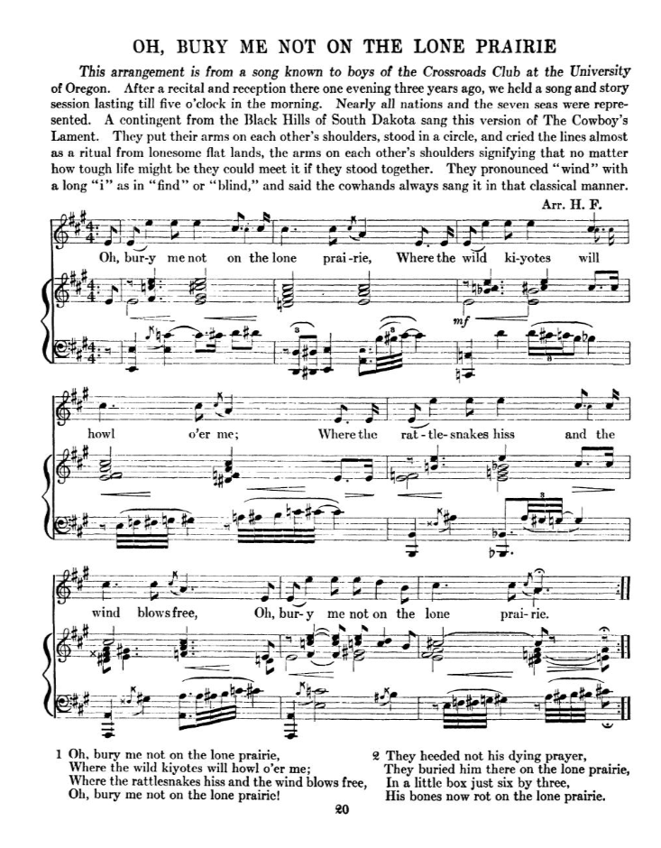

Bury Me Not
Ballad Deep Dive
This my second musical deep dive; if you missed the first, you can catch it here.
Additionally, I have again created an accompanying playlist to this post: click here to listen to different versions as you read!
Foreword
As you can probably tell by now, folk music is my favorite genre of music because every part of it is a historical artifact. The recorders, the lyrics, the performers – each have their own rich background which makes the combination of them even more special. However, American folk specifically holds a special place in my heart, since it’s a unique blend of worldly traditions with specifically American experiences.
“John Henry” and “John Hardy” from the last post in this series are perfect examples: both men1 exemplify the common man being a hero (as opposed to kings, knights, etc. from other Western traditions), the frontier experience of lawlessness and overcoming the odds, as well as the historical context of Post-Reconstruction meets the Industrial Revolution.
So without any further ado, let’s look at “Bury Me Not on the Lone Prarie”, a popular cowboy folk song, as another unique example of American folk music.
19th Century
Original Poem
“Bury Me Not on the Lone Prarie”, also “The Cowboy’s Lament”/“The Dying Cowboy”, was, just as much other American folk, passed down via oral transmission before being ever recorded. However, we need to back up even farther to get to the original basis for the song.

The earliest version of the song I could find was not actually a song – instead, it was originally published as a poem called “The Ocean Burial” in the Universalist Union, a religious journal published in Antebellum New York. Written by the Rev. E. H. Chapin in the 6/22/1839 issue2, which was a lament from the perspectives of sailors wishing to not be buried at sea, with the first stanza reading:
“Bury me not in the deep, deep sea?”
The words came faint and mournfully,
From the pallid lips of a youth, who lay
On the cabin couch, where day by day,
He had wasted and pined till o’er his brow,
The death-shade had slowly passed, and now,
When the land and his fond-loved home were nigh,
They had gathered around him to see him die.
As you can see, there’s no mention of the frontier, or cowboys, yet the main structure of the song is still present (“deep deep sea” vs “lone prairie”, etc.). It will still be decades before we start to see the version we know develop; however, this poem was later picked up as-is for publication elsewhere.
The Southern Literary Messenger
Later, in September of the same year (1839), the same poem by Rev. E. H. Chapin was published in the Southern Literary Messenger, a paper “devoted to every department of literature and fine arts”3 in Richmond, VA. Nestled between various other poems and a treatises4, it seems to be a pretty straight reprint of the original poem. As is custom, here is the first stanza:
“Bury me not in the deep, deep sea!”
The words came faint and mournfully,
From the pallid lips of a youth, who lay
On the cabin couch, where, day by day,
He had wasted and pined, till o’er his brow
The death shade had slowly passed—and now,
When the land and his fond-loved home were nigh,
They had gathered around him to see him die.
Of course, it was only a few months after the Univeralist Union, but the distance between the publications in such a short span already bodes well for the rate of spread of this poem. Granted, traveling the eastern seaboard of the United States in 1839 was far easier than going cross-country, but it’s still no small feat that the same poem was being taken up in different intellectual circles around the same time.
Setting to Music
To this point, each of the previous publications have been purely poems – enter George N. Allen, who published the first (that I can find) sheet music to the song, entitled “The Ocean Burial”5. Published in Boston in 1850 (and affectionately dedicated to his sister), Allen’s version of the song still has largely left the text the same – though his musical composition is not the one we are familiar with today.

If you are interested, you can listen to that version here:
And per usual, here is the opening verse:
“O! bury me not in the deep, deep sea”
The words came low and mournfully
From the pallid lips of youth, who lay
On his cabin couch at close of day
He had wasted and pined ’till o´er his brow
The death-shade had slowly passed, and now
Where the land and his fond loved home were nigh
They had gathered around him to see him to die
Now properly set to music, it’s truly become a lament in my eyes, as the music offers much more emotion to the work than before.
First Cowboy Influences
The next time we see the song is back in the paper, though this time it has very much adopted its cowboy influence. Jumping forward to 6/1/1887, under a miscellaneous section of the Vermont Watchman, we see it published under a new name: “the Song of the Dy-ing Cowboy”6. Before we go any farther, let’s take a look at the beginning:
“Oh! bury me not on the lone prairie!”
These words came slow and mournfully
From the pallid lips of a youth who lay
On his dying couch at the close of day.
Still, there is not much difference between this version and those that preceded it; however, it is clearly beginning to morph into the folk tune we know today. This transition becomes even clearer when you proceed to the third verse:
“Oh! bury me not on the lone prairie,
Where the wild coyotes will howl over me,
For I always wished to be buried, when I died,
In the little church-yard on the green hillside.
This time, the song also was not published alone – in fact, in the miscellaneous section, it’s part of a larger work called “Life Among the Cowboys”7. It was supposedly written in to the paper by a cowboy who relates a story that, well, you simply have to read for yourself (edited for clarity):
I will try and state a chapter of cow-boy life which even now brings tears to my eyes. In the spring [of 1879] a young man left his pleasant home in North Carolina and came out here to be a cow-boy. He got a job with our outfit, C. X. brand. The boys all called him “the kid from the States” and made fun of his attempt to lasso, but in a short time he got on all the rackets, and no one could throw a rope better or ride more recklessly than Tom, and he could shoot to perfection.
In the spring [of 1880] we were camped on the North Canadian, taking a drove of cattle to Kansas. Tom was taken sick one night and died the next evening. How well I remember that evening!
The sun was setting behind the white capped clouds, and a gentle wind fanned his pale cheeks. Not even a coyote broke the stillness with its dis-mal howl. The boys had gathered around to see their “pardner” die. Some of them might be called bad men, but none waited on him more tenderly.
“Raise me up, Dave,” [Tom] said, “and let me look out once more, for when to-morrow’s sun rises”—and he burst into tears. “Boys, when I die you all must not forget me.”
“Hush up, Tom,” said Tom Purdy; “you are not going to die.”
“Boys,” he went on, “I hoped when I should die I might be laid in the little church-yard at home, where my sister could plant flowers over my grave; but now I must lie by the Canadian, and the wolves will howl over me. I never shall be with you again at your round-ups and camp-fires. Boys, I want you to sing the song of the Dying Cow-boy.”
We gathered round him and sang it. How sad it sounded as the mournful tune rose and fell on the evening air. Just as we finished Tom sank back, dead. When the moon rose that night it looked down upon a sad group of men around a prairie grave. One wrote this on a rough board:
Tom Martin. Resting. May 1st, 1880.
Men say cow-boys are rough and have no hearts, but that night showed that they had hearts. Weep, O mother, for your boy sleeps beneath the sands of the North Canadian!
What else is there to say? The story above, though filled with too many coincidences to be true (granted, parts of it may be), is a perfect example of what American folk music is all about. An elegy, focused on the common man, who breaks out of the normalcy of American life and adopts the frontier spirit, who forges a brotherhood with the other cowboys and who dies in the harsh realities of the untamed West yearning for those at home.
20th Century
Title Change
Now we make our first foray into the 20th century, where we find our song published for the first time as “Bury Me Not on the Lone Prarie” in November of 1907 by William Jossey8. I can’t find much more detail on this one, but the art on the songster is quite neat.

Out West: A Magazine of The Old Pacific and New
Just after Jossey’s publication, we next find our ballad in Out West’s early 1908 volume, published in Los Angeles, California. The song in questions is actually part of a larger piece entitled “Songs of the Old Cattle Trails”, by Sharlot M. Hall9.

Told as a narrative, Hall blends story and song together, regaling the reader with a scene of various men (Tex, Kid, Sailor Man, and others) gathered ’round the campfire, singing songs and talking with one another. I will share where our song comes in:
…The Sailor-man had been lying stretched out beyond the fire, his head on a saddle, looking up at the sky while the others sang. No one knew where the Sailor-man hailed from, but he could do things with a rope that left the rest of the outfit wondering. … The Sailor-man sat up and reached into his blanket-roll for a little old guitar, odd wreckage from some hidden past; under his fingers it began to hum the old sea song, “The Sailor’s Grave,” but the words were a rough adaptation to the life of the range. The Sailor-man had drifted up the Long Trail from Texas and down again into Arizona, and left the song in a hundred camps to mark his way. His voice had a quality of pathos, like the desert wind at night, or the faint call of the sea across the darkness.
“Oh! bury me not on the lone prairie!”
These words came low and mournfully
From the pallid lips of a youth who lay
On his dying bed at the close of day. …
Just as the last story-version that we read, this is quintessential Americana folk. Not only is the ballad telling its own story, but “storifying” the singing of the tune is just about as good as it gets.
Cowboy Songs and Other Frontier Ballads
Our next stop is in 1910, where for the first time, the popular tune that has come to be associated with the song is added for the first time. Published in John Lomax’s Cowboy Songs and Other Frontier Ballads, the folk song changed from strictly a lament to a little bit of an ode to the cowboy, romanticizing the trade as something that is representative of the American spirit.
Lomax, in his preface, wrote as much10:
[The cowboy] has always been on the skirmish line of civilization. Restless, fearless, chivalric, elemental, he lived hard, shot quick and true, and died with his face to his foe. Still much misunderstood, he is often slandered, nearly always caricatured, both by the press and by the stage.
Perhaps these songs, coming direct from the cowboy’s experience, giving vent to his careless and his tender emotions, will afford future generations a truer conception of what he really was than is now possessed by those who know him only through highly colored romances. … [Though] the old-time round-up is no more, … the last figure to vanish is the cowboy, the animating spirit of the vanishing era.
He sits his horse easily as he rides through a wide valley, enclosed by mountains, clad in the hazy purple of coming night, with his face turned steadily down the long, long road. … Dauntless, reckless, without the unearthly purity of Sir Galahad though as gentle to a pure woman as King Arthur, he is truly a knight of the twentieth century.
With that in mind to set the stage, let’s turn to the song itself, and mark here too the first verse:
“O BURY me not on the lone prairie,”
These words came low and mournfully
From the pallid lips of a youth who lay
On his dying bed at the close of day
It’s almost remarkable how little the verse has changed over nigh on 100 years since the original poem. Of course, this can probably be attributed to the fact that it is the first verse, as most people (I would assume) recall the first better than the rest. However, this didn’t have to be the case, as Lomax admitted to collecting various verses and putting them together in a way that seemed fitting11.
That this became the default version of the song is not purely chance – the Lomaxs (John and Alan) are widely credited with being some of the first to write down many floating verses and songs which had till that point only been passed on through oral transmission.
After Lomax’s book, the ballad very much took off and began to be published in more outlets, as well as be recorded on the relatively new technology that was vinyl – but let’s start with the other publications.
Journal of American Folklore
In early 1912, Phillips Barry, A.M. published a piece in the journal entitled “Some Aspects of Folk-Song”, in which he defines two categories of folk ballads: those of situation and those of introspection12. The former is concerned with realism of action, whereas the latter’sinterest lies with the chief actor as a personality.
What’s interesting here is that Barry classifies our ballad of interest as being in both camps – the current version being a ballad of situation, whereas it’s origin (“The Ocean Burial”), is more of a ballad on introspection. He also notes that the origin is more popular in the Eastern States, whereas the “modern” cowboy version is more popular elsewhere, ostensibly the West.
Perhaps this also can explain the difference of situation vs introspection: where the ballad is more literally applicable, it takes on a situational aspect, describing events as they happen (or purport to; see the story above from the Vermont Watchman). However, where the listeners have no frame of reference for the frontier, the ballad sounds more introspective, closer to a universal feeling rather than a specific application.
Sunset (The Pacific Monthly)
Later in 1912, Sunset (formerly the Pacific Monthly; Sunset magazine still exists today) issued a magazine in Portland, Oregon with our ballad inside, entitled “The Lone Prarie”13, as part of a collection of “Cow Boy Songs” by Dane Coolidge.

Here as usual, is the first verse:
(From the version of W. E. Hawks)
“Oh bury me not on the lone prairie,”
These words came low and mournfully
From the pallid lips of a youth who lay
On his dying bed at the break of day.
Again, we see no major deviations in the first verse, though there are some slight changes later in the ballad as written. Later in his piece, Coolidge goes on to describe the song as:
[This] is another song with a history, a song which shows in its many verses the native poetry of the cow-boy and yet carries in its music the memories of other days. Many a puncher has sung it beneath the stars and added a prayer for himself, only to be buried at last on the lone prairie. … [It is] one of the best-known and best-loved of cow-boy songs, having many other verses and variants, but the music is from an old English sea-song which begins: “Oh bury me not in the deep, deep sea,” hence the reason for prairie being pronounced “prai-ree.”
All of the writers have stressed the romanticism of cowboys, the greater West, and Americana as a whole in the ballad, and Coolidge is no exception to that rule.
Song-a-Logue of America
In 1922, Bentley Ball published his “Song-a-Logue of America”, a collection of folk and art songs, writing of folk songs and ballads14:
Many of these songs are simple and artless in form, but they are true to human nature, and strike deep in the soul of man a responsive chord. Therefore it is they live and seem destined to live.

As part of this collection, Ball included various cowboy songs, of which one was “The Dying Cowboy”, an alternate title to our song of interest (recall it was also this in the Vermont Watchman). As is now our tradition, I present the first verse:
“O bury me not on the lone prairie”
These words came low and mournfully
From the pale lips of a youth who lay
On his dying bed at the close of day.
Again, not much daylight between versions, which is remarkable. The rest of the song, however, does carry some very slight lyrical and melodic variations, though none quite so drastic as the jump from “The Ocean Buried” to now.
The American Songbag
Our last publication of note comes in 1927, courtesy of Carl Sandburg15. Nothing too crazy to note here, as it is a reprinting of other versions, with not much else added.

However, I will note that this, and the previous publication, are collections of popular songs (songsters) that people could buy. This way, as recordings started taking off, they can play the music themselves, or know the lyrics, etc.
Thoughts
As of 1927, our ballad, which we have so carefully traced over 100+ years, has certainly entered the public sphere, and is enjoyed by many from coast to coast. At this time, the ballad is available for purchase in both print and vinyl, and as such, our journey with the song’s evolution will end here.
Evolving from a sailor’s plea not to be lost at sea, all the way to a cowboy’s dying wish on the frontier, “Bury Me Not on the Lone Prairie” grew alongside the spirit of the American West. Each modification, re-telling, floating verse, or publication only adds to the storied past of this iconically American ballad. It’s no longer just a song, as its story of creation is just another piece of what makes it so special. Stories of the common man, of overcoming the odds, of the rough-and-tumble - all pieces which come together in this ballad to form a unique blend of American experiences.
I hope you’ve enjoyed the accompanying playlist; I wanted to include a few notes on the performances and recordings of the ballad as a whole:
The first recording I can find is Bentley Ball (on the Columbia Label) in 1919/1920ish, which is actually our writer of the Song-a-Logue of America.

Below, find a list of some of the other recordings I found mention of16:
Carl T. Sprague (1926); Vernon Dalhart (1927); Pickard Family (1927); Bill Childers (1928); Jules Verne Allen (1928); Asa Martin (1932); Carter Family (1939); Cisco Houston (1952); Tex Ritter (1959); Burl Ives (1961); Johnny Cash (1966).

I really love the Carter Family, but I would say Sprague’s version is the best of them all – he truly sings it as a lament. The emotion comes through, and you can really imagine the hardship faced by the character of the song. The rest of the recordings are also great, but are played a little faster, so to me at least, they don’t convey the same feeling.
-CH